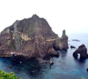
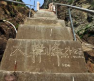
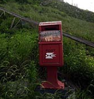
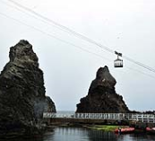
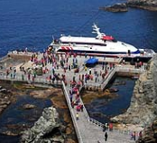

| 번호 | 구분 | 제목 | 장소 | 진행기간 | 접수방법 | |
|---|---|---|---|---|---|---|
| 1 | 전시 |  | 아침을 여는 섬 독도 | 독도월드 | 2021-12-11 ~ 2021-12-30 | 온라인 |
| 2 | 영상 |  | 서울 강서구에서 독도를 만나다. | 독도월드 | 2021-11-12 ~ 2021-11-17 | 현장접수 |
| 3 | 관람 |  | 어화꽃 피는 독도, 울릉도 | 독도월드 | 2021-10-01 ~ 2021-10-30 | 전화예약 |
| 4 | 포토 |  | 한국인의 삶의 기록 독도 | 독도월드 | 2021-09-02 ~ 2021-09-30 | 초청장 |
| 5 | 기록 |  | 일본 죽도의 날 10년 허구와 왜곡 | 독도월드 | 2021-08-15 ~ 2021-08-30 | 해당없음 |